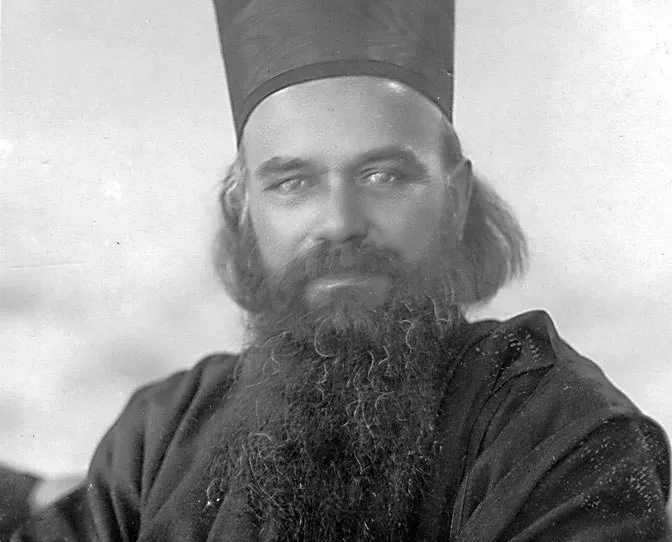
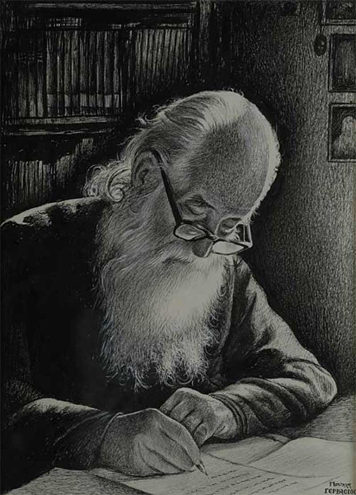

ПРЕДГОВОР
„Сваки дан је једна степеница ка небу. Читајте житија светих, јер су она жива Јеванђеља.“
— Свети Николај Велимировић

Откако је Српског рода, није било мудрије, и богомудрије,
српске књиге од Охридског пролога Владике Николаја. И зато: ни
бесмртније, ни важније српске књиге. И кроза све то: ни корисније, јер је од вечне користи за српскога човека и његова обадва
живота у обадва света.
Охридски пролог је Српско Еванђеље, вечно Српско Еванђеље. У њему је све што увек треба српској души у обадва света,
све што надживљује наше земаљске смрти, све што савлађује и
умртвљује наше грехе, и страсти. Рој за ројем, свети ројеви благих
вести за тебе у васцелом животу твом, који почиње на земљи и
продужује се кроза сву вечност у ономе свету. Ето, то је Охридски пролог, то Српско Еванђеље.
Српско Еванђеље? — Да, јер те учи и научи вечној Истини.
Српско Еванђеље? — Да, јер те учи и научи вечној Правди.
Српско Еванђеље? — Да, јер те учи и научи вечној Доброти, вечној Њубави, вечној Мудрости, вечној Лепоти, вечној Радости.
Српско Еванђеље? — Да, јер те учи и научи вечном Животу. Да, јер те учи и научи како се светим тајнама еванђелским и
светим врлинама еванђелским савлађује и побеђује: обмана, лаж,
среброљубље, гордост, гњев, похота, пакост, злоба, завист, мржња,
злоћудност, блуд, лакомство, очајање, неверје, безверје, маловерје,
полуверје; једном речју: сваки грех, свака страст, свако зло, свака
смрт, сваки ђаво; и тиме — сав пакао земаљски и сва искушења
земаљска.
Еванђелист међу Еванђелистима, ето то је свети писац овог
Српског Еванђеља. Апостол међу Апостолима, ето то је свети
писац овог Српског Еванђеља.
Мученик међу Мученицима, ето то је свети писац овог
Српског Еванђеља.
Исповедник међу Исповедницима, ето то је свети писац
овог Српског Еванђеља.
Светитељ међу Светитељима, ето то је свети писац овог
Српског Еванђеља.
Ваистину Еванђелист, ваистину Апостол, ваистину Мученик,
ваистину Исповедник, ваистину Светитељ — свети Владика Николај, ваистину највидовитије
српско око: види невидљиво; најслуховитије српско ухо: чује нечујно; најпробуђенија српска савест:
херувимски ревнује за све што је Божије. Вођен и руковођен њим, ње -
говим Охридским прологом нећеш залутати, него ћеш увек ићи путем
што несумњиво води у само небо и небеса над небесима.
Заиста: речи његове — дух су и живот за нас Србе. И право
силазе у твој гроб, у твоју смрт, и подижу те из гроба, васкрсавају из
мртвих. Савест моја? Гроб је мој савест моја, ако није освећена и
преображена небесном истином Христовом, и овечњена њеном вечношћу. Гроб је и срце моје, гроб је и душа моја, гроб је и разум мој.
А кад у гробове наше сиђу христомоћне речи нашег српског Еванђелиста, — сви наши мртваци устају из гробова наших, васкрсавају на
живот вечни кроз Истину вечну, Истшу Христову. Јер је само христова Истина вечна. И ми истинујући њоме, прелазимо из временског у
вечни живот још овде на земљи, и никаква смрт нема власти над нама.
Свети Владика Николај? — Васкрситељ каквог Српство имало
није, од Светог Саве до данас. Васкрситељ српских душа — у живот
вечни, у истину вечну, у љубав вечну, у радост вечну. Чиме? — Христом, само Грсподом Христом. Јер без Господа Христа — све је гроб и
смрт. Земља је гроб и смрт; сунце је гроб и смрт; човек је гроб и
смрт; разум човеков је гроб и смрт; савест човекова је гроб и смрт;
све човеково је гроб и смрт; тело му је гроб и смрт; душа му је гроб
и смрт. Па и само небо је гроб и смрт; и васиона је гроб и смрт; и
све васионе су само језиви гробови и одвратне смрти. А ти? а ја? а
ми? Гроб до гроба, и роб до роба; робље смрти. Све само робље и
гробље: беспомоћно робље и црвљиво гробље...
Охридски пролог најнужнији приручник — свети приручник,
најнужнији требник — свети требник свакој српској души, и души васцеле земаљске Србије која насељује и небеску Србију. Јер исто Еванђеље важи и за њих горе и за нас доле, пошто је Господ Христос исти и јуче и данас и вавек (Јевр. 13, 8). У свакој невољи отвори овај
свети приручник и наћи ћеш што ти треба. Нема муке која те може
посетити, а да ти овај свети требник неће дати силе да своју муку савладаш Христом Богом. Нема страсти која ти може острастити душу,
а да јој у Охридском прологу не нађеш опробаног и сигурног лека.
Нема греха који те може снаћи и осмртити душу, а да у светом Прологу Охридском не нађеш спасење од њега, и његових страшних пратиоца: смрти и ђавола.
Ако си горд, — а то је болест на смрт — Охридски пролог
има опробани лек за тебе: свето смирење.
Ако си лењ, — а то је болест на смрт — Охридски пролог
има опробани лек за тебе: свето бдење.
Ако си среброњубив, — а то је болест на смрт — Охридски пролог има опробани лек за тебе: свето сиротовање Христа
ради.
Ако си гневњив, — а то је болест на смрт — Охридски
пролог има опробани лек за тебе: света самоосуда.
Ако си похотљив, — а то је болест на смрт — Охридски
пролог има опробани лек за тебе: света молитва, свети пост.
Ако си пакостан, или злобан, или завидљив, или груб, или
напрасит, или насилник, или силеџија, или разбојник, или убица,
или блудник, или прељубочинац, или свађалица, или опадач — а
све су то греси на смрт — Охридски пролог има одговарајући лек
за сваки од ових грехова, за сваку од ових бољки, и то сигурно
свети лек који неће обманути.
Уопште, ако патиш од ма кога греха или од ма које страсти, — а сваки грех је болест на смрт, и свака страст је болест на
смрт — Охридски пролог ти пружа по свети лек за сваки твој
грех, по свету врлину за сваку твоју страст. А од тебе се тражи
једно: да хоћеш и пожелиш лек за свој грех.
Очигледна је истина за човека који испитује себе: грех,
сваки грех је на првом месту болест ума нашег. Тако исто и
страст. И грех и страст оболешћују наш ум и онеспособљују га за
здраво, правилно мишљење и расуђивање и суђење и вршење свог
богоданог посла у бићу човековом. Огреховљени, острашћени ум,
а то значи — оболели ум, заводи човека на сваковрсне заблуде.
Па му чак заблуде прислужују као истине. Зато је прва дужност
човекова: излечити ум свој од његових бољки. И на тај начин осигурати себи здраво расуђивање, здраво суђење, здраво схватање и
себе и света, и ближњега и даљњега.
Што важи за ум човеков важи и за срце његово, и за
свест, и за вољу, и за сву душу његову. И за њих је сваки грех —
болест, и свака страст — болест. Излечити их од греха и страсти
и јесте оздрављење њихово: да би здраво, правилно, богоугодно
вршили своје природне, Богом им одређене дужности. Срце —
очишћено од страсти и греха: хоће Бога7 осећа Бога, види Бога,
стреми ка Богу, води човека свему узвишеном, бесмртном, вечном.
Тако и савест, исцељена и оздрављена — избавља од сваке заблуде, води из добра у добро, из врлине у врлину. А воља? И она,
исцељена од греховне раслабљености и пометености, хоће оно што
је честито, поштено, истинито, небесно, Божанско, Вечно.
Најглавнија и најстрашнија болест рода људског јесте грех.
Уствари, то је свеболест из које се роје све остале болести. Исцељење од те свеболести — оздрављује човека, чини га правим истинитим човеком. И човек који се бори са грехом као са својим најопаснијим непријатељем, и лечи себе од греха као од своје најстрашније болести, осећа да је човек небоземно биће: протегнуто у
два света истовремено, у небески и земаљски свет. И то биће: увек
више невидљиво него видљиво. Такав човек осећа још и то, да је
човек богочовечно биће: све што је човечје, у ствари је човечје
Богом и Божјим; и што човек има више Бога у себи, све је више
човек прави човек, истинити човек. А човек сав испуњен Богом, и
јесте савршени човек, завршени и довршени човек, То је Вечни
Човек, онај за којим сви жуде, кога сви траже: идеални човек.
Све то можемо лако проверити и постићи и ти и ја, и ми
сви. Како? Охридским прологом. Пробајмо: живимо по њему из
дана у дан, из ноћи у ноћ; нека нас он води и руководи кроз све
наше дане и ноћи, па ћемо и осетити у себи, и градити у себи, и
на крају изградити у себи Вечнога Човека. И тако пронаћи себе
правог, себе бесмртног, себе вечног, себе Богочовечног. И остварити себе вечног, излечити себе од људске свеболести — греха, и
испунити себе Христом Богом. По заповести вечног Еванђеља Божјег: „ Испуните себе сваком пуноћом Божјом; обуците се -у Господа нашег Исуса Христа, јер у Њему живи свака пуноћа Божанства" (Ефес. 3, 19; Рим. 13, 14; Кол. 2, 9).
А свети писац Охридског пролога? — Светосавски Свесрбин и Светосавски Свечовек: свети Свесрбин и свети Свечовек.
Хвала ти, Господе — у њему имамо новог Апостола!
Хвала ти, Господе — у њему имамо новог Еванђелиста!
Хвала ти, Господе — у њему имамо новог Исповедника!
Хвала ти, Господе — у њему имамо новог Мученика!
Хвала ти, Господе — у њему имамо новог Светитеља!
Вођени њиме, првим после Светога Саве свесрпским Патријархом, ми ћемо сигурно стићи к Теби, Господе, кроз Истину
вечну у Живот вечни.
Архимандрит Јустин Поповић (1962)
